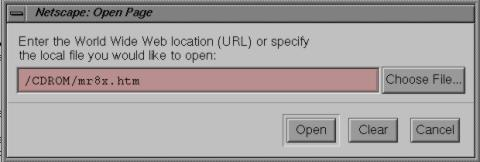
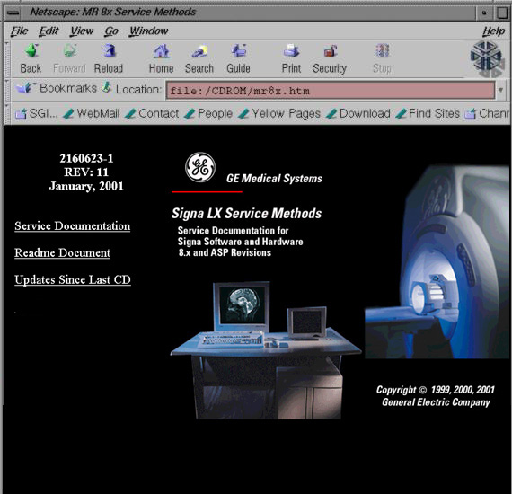
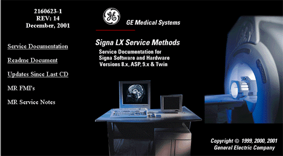
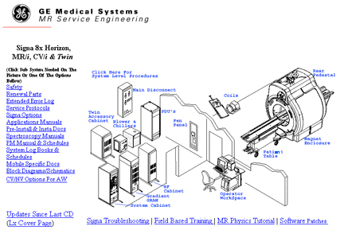

Direction 2160623 - MR Signa 8.x/9.0/10.x Service Methods
 Back to MR
8.x
Start Page
Back to MR
8.x
Start Page
1- What This CD Replaces and Why
The CD 2160623-1 MR 8.x/9.0/10.x Service Methods is restricted to employees of General Electric Medical Systems (GEMS). Use by anyone other than employees of GEMS is strictly prohibited.
This Signa 8.x Service Methods CD supersedes any other Signa 8.x Service Methods CD. The service documentation contained on this CD is accurate and the most current for the 8.x Signa platform.
The evaluation is for user interface functionality and completeness. See the update document on this CD, Link to Updates, for a list of documents that changed since the last 2160623 MR Service Methods CD. If you find a problem with a document, take the time to write an iTrak. This will ensure changes to the documentation are addressed.
Updates to this CD can be found at: http://3.87.118.28/optec3/common/8xdocs/mr8x.htm. (You must be online with GEMS Intranet in order to use this link.)
2- What Is Needed to Use This CD
The documentation on this CD is in a web-based format. The contents are Host OS independent.
Your system will require a web browser. This CD was tested on Internet Explorer and Netscape for Windows 95/98/NT, Netscape for IRIX and Sun-based Operating Systems. The Signa Host computer is preloaded with the Netscape browser. MR Service Engineering does not supply a web browser with this CD-ROM for Windows-based machines.
You will also need Adobe Acrobat Reader, version 4.0 or greater, loaded on your system. Signa Host computers are preloaded with Acrobat Reader.
3- Starting Documentation on This CD
3-1 Accessing Documentation on a PC
Assuming the operating system is Microsoft Windows 95, 98 or Windows NT, insert the CD into the CD-ROM drive. On the desktop taskbar, push the <Start> button and scroll to Run. In the edit box, type: d:\setup.exe, then push the <OK> button. This will load an icon under Program Files called, MR 8x Service Methods. After this load, the CD can be accessed by inserting the CD into the CD-ROM drive, pushing the <Start> button, scrolling to Program Files, then to MR Service Methods, and scrolling to and selecting MR 8x Documents. If there is a problem with the Set-up script, make a bookmark by opening your web browser and pointing it to the MR Service CD and opening the file, mr8x.htm.
3-2 Accessing Documentation on the Signa 8.x SGI Host Computer
The following works with Signa 8.3 and higher. Insert the Service Methods CD into the host computer's CD-ROM drive. On the system, open a command window. Access the system as root by typing the following in the command window: su <Enter>
The system will ask for a password. The system default is: operator
Insert the Service Methods CD 2160623 into the systems CD-ROM drive. Wait for 20 seconds or until the amber light on front of the CD-ROM drive stops blinking.
On the command line, type: mediad <Enter>
To open Netscape Navigator, type: netscape on the command line.
- The first time Netscape Navigator opens on the system, a license agreement pop-up displays. Press the <Accept> button. (It will not display again unless software is reloaded on the system.)
- In addition, two warning pop-ups display with the message that a directory was created for use as disk cache. Press the <OK> button on both boxes. (They will not appear again unless software is reloaded on the system.)
In Netscape Navigator, use the system cursor on the menu bar to select: File then Open. In the Open Page dialog box, press the <Choose File> button. In the Edit box that displays, type: /CDROM/mr8x.htm, and press the <Open> button or <Enter> key on the keyboard.

The Service CD will open in Netscape. Use it as you would on the PC.

When done, use the system cursor to select File and Exit to exit Netscape. In the Open Command window, type: cd/ <Enter>
Remove the CD from the drive and type: eject /CDROM <Enter>
To perform a search, enter the key words or phrase into the Search request area, and press the Search button at the bottom of the page. To understand more about dtSearch capabilities, press the Help button at the bottom of the page.
This CD takes the documentation completely out of the ToolBook environment and into a web-based environment. The interface was designed for ease of use by the MR Field Engineer. This CD is also located on the GEMS Intranet and will be maintained with the latest documentation when updated. Updates to this CD can be found at: http://3.87.118.28/optec3/common/8xdocs/mr8x.htm. (You must be online with GEMS Intranet in order to use this link.) Check this link often for updates. New CDs are distributed at least quarterly.
4-1 Entering the CD Front Page

The front page contains links to the main section of the CD:
4-2 Index Page

Service documents are categorized by subsystem or system-level procedures. To access a desired subsystem, click on the subsystem in the picture on the right or any of the categories on the left. To exit the CD, just close the web browser.
Some of the subsystem groups are categorized further into cabinet types. For
example: When
entering the RF subsystem, the additional categories: RF/PEN 1, RF/PEN 2, RF/PDU 1.0T or
RF/PDU 1.5T, will display. Pictures are shown for each cabinet type in the event the user is
not familiar with the RF choices and can match what is on the CD with the one on site.